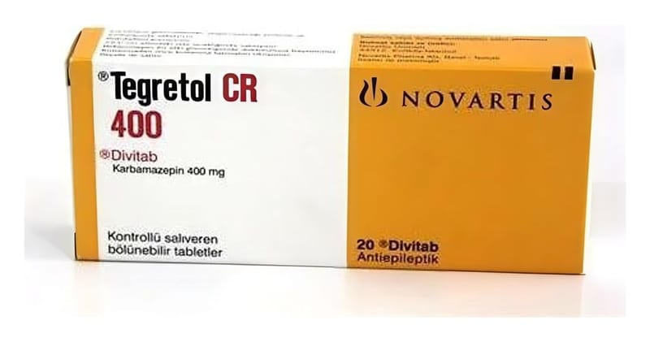

Tegretol 400 mg Değiştirilmiş Salımlı Tablet, 20 Adet

Ne için kullanılır
KT · Bölüm 1TEGRETOL, 20 adet değiştirilmiş salımlı tablet içeren blister ambalajda takdim edilmektedir.
TEGRETOL 400 mg değiştirilmiş salımlı tablet, kahverengimsi oranj, oval, kenarları eğimli, bir yüzünde “CG/CG”, diğer yüzünde “ENE/ENE” harfleri basılı olan, çentikli tabletlerdir. Çentiğin amacı tableti iki eşit doza bölmektir. Her bir tablet 400 mg etkin madde, karbamazepin içerir. TEGRETOL antiepileptikler (sara hastalığının tedavisinde kullanılan ilaçlar) adı verilen bir ilaç grubuna dahildir. Etki mekanizması nedeniyle, diğer hastalıklar için de kullanılabilir. TEGRETOL belirli nöbet tiplerini (epilepsi, sara hastalığı) tedavi etmek için kullanılır. Ruh Sağlığı hastalıklarından olan, belli bir ruhsal çöküntü (depresyon) tipinde, çökkünlük ve taşkınlık dönemleri ile seyreden “İki uçlu duygu durum bozuklukları” adı verilen ruhsal hastalığın taşkınlık dönemlerinde (manik epizod) ve beyinden çıkan sinirlerden birinin etkilenmesi sonucunda genellikle bir yüz yarısında şiddetli ağrılarla seyreden bir hastalık olan “Trigeminal Nevralji” adı verilen hastalığın tedavisinde kullanılır. Vücuttaki diğer ağrılar ya da sancılar için kullanılmamalıdır. Epilepsi iki ya da daha fazla nöbetle (kriz) karakterize olan bir hastalıktır. Nöbetler, beyinden kaslara giden mesajlar vücuttaki sinir yolları tarafından düzgün bir şekilde iletilmediğinde meydana gelmektedir. TEGRETOL bu mesajların iletiminin kontrol edilmesine yardımcı olur. TEGRETOL ayrıca yukarıda bahsedilen diğer hastalıklarda da sinir işlevlerini düzenlemektedir.